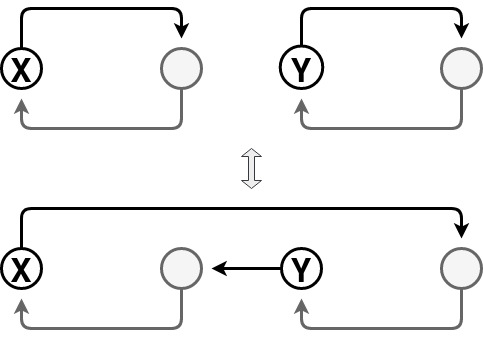

Dev Blog
| ./dev |
|
Original theme by orderedlist (CC-BY-SA)
Where applicable, all content is licensed under a CC-BY-SA.
|

Fisher-Yates Shuffle
The Fisher-Yates shuffle algorithm is used to create a random permutation. The derivation is relatively straight forward:
function fisher_yates_shuffle(a) {
var t, n = a.length;
for (var i=0; i<(n-1); i++) {
var idx = i + Math.floor(Math.random()*(n-i));
t = a[i];
a[i] = a[idx];
a[idx] = t;
}
}
We choose the first element at random, then proceed to choose subsequent entries from the remaining elements.
As a spot check, we can confirm that there are $n!$ configurations yielding approximately $ n (lg(n) - 1) $ bits of entropy. Each poll of the random number generator is for $ lg(n-i) $ bits over $n-1$ entries:
$$ lg(2) + lg(3) + \cdots + lg(n) = \sum_{k=1}^{n} lg(k) = lg(n!) $$
The Wrong Way
One can consider the following incorrect way to do the shuffle:
function nofish_shuffle(a) {
var t, n = a.length;
for (var i=0; i<n; i++) {
var idx = Math.floor(Math.random()*n);
t = a[i];
a[i] = a[idx];
a[idx] = t;
}
}
a slight variant:
function noyaks_shuffle(a) {
var t, n = a.length;
for (var i=0; i<n; i++) {
var idx = Math.floor(Math.random()*(n-1));
if (idx==i) { idx = n-1; }
t = a[i];
a[i] = a[idx];
a[idx] = t;
}
}
and another:
function nomaar_shuffle(a) {
var t, n = a.length;
for (var i=0; i<n; i++) {
var idx0 = Math.floor(Math.random()*n);
var idx1 = Math.floor(Math.random()*n);
t = a[idx0];
a[idx0] = a[idx1];
a[idx1] = t;
}
}
Where the difference in nofish_shuffle and noyaks_shuffle
is to skip the current index when considering which element to permute.
nomaar_shuffle is yet another variant where each two elements are
chosen at random and swapped $n$ times.
A friend of mine suggested an nice proof to show the above two shuffle algorithms provide incorrect results.
As above, there are $n!$ possible shuffles we want to choose from, with
equal probability.
Since nofish_shuffle is choosing each element to permute from the whole
array, there are $n^n$ possible choices for the permutation, where
some permutations might be represented more than once.
Producing multiple configurations is permissible so long as nofish_shuffle
would produce an equal distribution for each of the $n!$ configurations.
Since $ n! \nmid n^n $ for $n>2$, there must be some configurations that
appear more often by the pigeonhole principle.
noyaks_shuffle doesn't fare much better since there are $n^{n-1}$ possible
choices of permutation schedules and $n! \nmid n^{n-1}$ for $n>2$.
The same type of analysis works for the nomaar_shuffle by noticing
that the number of permutation schedules is $n^{2 n}$ and that still $n! \nmid n^{2 n}$.
Though hidden in such a large configuration space, nofish_shuffle,
noyaks_shuffle and nomaar_shuffle produce configurations that are not uniformly
distributed.
Addendum
Sattalo's algorithm creates a random single cycle permutation. The algorithm is similar to Fisher-Yates but does not allow the choice of the current index element when swapping:
function sattalo_shuffle(a) {
var t, n = a.length;
for (var i=0; i<(n-1); i++) {
var idx = i + 1 + Math.floor(Math.random()*(n-i-1));
t = a[i];
a[i] = a[idx];
a[idx] = t;
}
}
There are $(n-1)!$ configurations, so we know the above algorithm subsamples from the space of all permutation possibilities.
To see that it produces a single cycle, note that swapping elements has two possibilities:

- If both elements are in the same cycle, swapping elements creates two disjoint cycles
- If both elements are in different cycles, swapping elements creates a single cycle
The swap step in Sattalo's algorithm can be thought of as swapping a cycle of length one, the current index position, with another cycle pointed to by the chosen random index. Since these are two distinct cycles, they join to create a single cycle. This is done $(n-1)$ times forcing a single large cycle.
To see that this draws uniformly from single cycle permutations, proceed inductively by noticing that if a single cycle of length $(n-1)$ is produced uniformly at random, then extending it to a single cycle of length $n$ by the above method will favor each of the $(n-1)$ possible extensions equally.